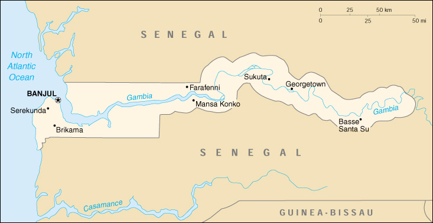

|
Gambia, The | |
| Introduction Geography People Government Economy Communications Transportation Military Transnational Issues | ||
|  | ||
| Gambia, The | Introduction | Top of Page |
| Background: | The Gambia gained its independence from the UK in 1965; it formed a short-lived federation of Senegambia with Senegal between 1982 and 1989. In 1991 the two nations signed a friendship and cooperation treaty. A military coup in 1994 overthrew the president and banned political activity, but a new 1996 constitution and presidential elections, followed by parliamentary balloting in 1997, have completed a nominal return to civilian rule. |
| Gambia, The | Geography | Top of Page |
| Location: | Western Africa, bordering the North Atlantic Ocean and Senegal |
| Geographic coordinates: | 13 28 N, 16 34 W |
| Map references: | Africa |
| Area: |
total:
11,300 sq km
land: 10,000 sq km water: 1,300 sq km |
| Area - comparative: | slightly less than twice the size of Delaware |
| Land boundaries: |
total:
740 km
border countries: Senegal 740 km |
| Coastline: | 80 km |
| Maritime claims: |
contiguous zone:
18 NM
continental shelf: not specified exclusive fishing zone: 200 NM territorial sea: 12 NM |
| Climate: | tropical; hot, rainy season (June to November); cooler, dry season (November to May) |
| Terrain: | flood plain of the Gambia river flanked by some low hills |
| Elevation extremes: |
lowest point:
Atlantic Ocean 0 m
highest point: unnamed location 53 m |
| Natural resources: | fish |
| Land use: |
arable land:
18%
permanent crops: 0% permanent pastures: 9% forests and woodland: 28% other: 45% (1993 est.) |
| Irrigated land: | 150 sq km (1993 est.) |
| Natural hazards: | drought (rainfall has dropped by 30% in the last 30 years) |
| Environment - current issues: | deforestation; desertification; water-borne diseases prevalent |
| Environment - international agreements: |
party to:
Biodiversity, Climate Change, Desertification, Endangered Species, Hazardous Wastes, Law of the Sea, Nuclear Test Ban, Ozone Layer Protection, Ship Pollution, Wetlands
signed, but not ratified: none of the selected agreements |
| Geography - note: | almost an enclave of Senegal; smallest country on the continent of Africa |
| Gambia, The | People | Top of Page |
| Population: | 1,411,205 (July 2001 est.) |
| Age structure: |
0-14 years:
45.22% (male 320,458; female 317,647)
15-64 years: 52.13% (male 364,900; female 370,717) 65 years and over: 2.65% (male 19,660; female 17,823) (2001 est.) |
| Population growth rate: | 3.14% (2001 est.) |
| Birth rate: | 41.76 births/1,000 population (2001 est.) |
| Death rate: | 12.92 deaths/1,000 population (2001 est.) |
| Net migration rate: | 2.59 migrant(s)/1,000 population (2001 est.) |
| Sex ratio: |
at birth:
1.03 male(s)/female
under 15 years: 1.01 male(s)/female 15-64 years: 0.98 male(s)/female 65 years and over: 1.1 male(s)/female total population: 1 male(s)/female (2001 est.) |
| Infant mortality rate: | 77.84 deaths/1,000 live births (2001 est.) |
| Life expectancy at birth: |
total population:
53.59 years
male: 51.65 years female: 55.58 years (2001 est.) |
| Total fertility rate: | 5.68 children born/woman (2001 est.) |
| HIV/AIDS - adult prevalence rate: | 1.95% (1999 est.) |
| HIV/AIDS - people living with HIV/AIDS: | 13,000 (1999 est.) |
| HIV/AIDS - deaths: | 1,400 (1999 est.) |
| Nationality: |
noun:
Gambian(s)
adjective: Gambian |
| Ethnic groups: | African 99% (Mandinka 42%, Fula 18%, Wolof 16%, Jola 10%, Serahuli 9%, other 4%), non-African 1% |
| Religions: | Muslim 90%, Christian 9%, indigenous beliefs 1% |
| Languages: | English (official), Mandinka, Wolof, Fula, other indigenous vernaculars |
| Literacy: |
definition:
age 15 and over can read and write
total population: 47.5% male: 58.4% female: 37.1% (2001 est.) |
| Gambia, The | Government | Top of Page |
| Country name: |
conventional long form:
Republic of The Gambia
conventional short form: The Gambia |
| Government type: | republic under multiparty democratic rule |
| Capital: | Banjul |
| Administrative divisions: | 5 divisions and 1 city*; Banjul*, Lower River, Central River, North Bank, Upper River, Western |
| Independence: | 18 February 1965 (from UK) |
| National holiday: | Independence Day, 18 February (1965) |
| Constitution: | 24 April 1970; suspended July 1994; rewritten and approved by national referendum 8 August 1996; reestablished in January 1997 |
| Legal system: | based on a composite of English common law, Koranic law, and customary law; accepts compulsory ICJ jurisdiction, with reservations |
| Suffrage: | 18 years of age; universal |
| Executive branch: |
chief of state:
President Yahya A. J. J. JAMMEH (since 18 October 1996); Vice President Isatou Njie SAIDY (since 20 March 1997); note - the president is both the chief of state and head of government
head of government: President Yahya A. J. J. JAMMEH (since 18 October 1996); Vice President Isatou Njie SAIDY (since 20 March 1997); note - the president is both the chief of state and head of government cabinet: Cabinet is appointed by the president elections: the president is elected by popular vote for a five-year term; the number of terms is not restricted; election last held 26 September 1996 (next to be held NA October 2001) election results: Yahya A. J. J. JAMMEH elected president; percent of vote - Yahya A. J. J. JAMMEH 55.8%, Ousainou DARBOE 35.8% |
| Legislative branch: |
unicameral National Assembly (49 seats; 45 elected by popular vote, 4 appointed by the president; members serve five-year terms)
elections: last popular election held 2 January 1997 (next to be held NA January 2002) election results: percent of vote by party - NA%; seats by party - APRC 33, UDP 7, NRP 2, PDOIS 1, independents 2 |
| Judicial branch: | Supreme Court |
| Political parties and leaders: |
Alliance for Patriotic Reorientation and Construction or APRC [Yahya A. J. J. JAMMEH]; National Reconciliation Party or NRP [Hamat N. K. BAH]; People's Democratic Organization for Independence and Socialism or PDOIS [Sidia JATTA]; United Democratic Party or UDP [Ousainou DARBOE]
note: in August 1996 the government banned the following from participation in the elections of 1996: People's Progressive Party or PPP [former President Dawda K. JAWARA (in exile)], and two opposition parties - the National Convention Party or NCP [former Vice President Sheriff DIBBA] and the Gambian People's Party or GPP [Hassan Musa CAMARA] |
| Political pressure groups and leaders: | NA |
| International organization participation: | ACP, AfDB, C, CCC, ECA, ECOWAS, FAO, G-77, IBRD, ICAO, ICFTU, ICRM, IDA, IDB, IFAD, IFC, IFRCS, ILO, IMF, IMO, Intelsat (nonsignatory user), Interpol, IOC, ITU, NAM, OAU, OIC, OPCW, UN, UNCTAD, UNESCO, UNIDO, UNMEE, UPU, WCL, WFTU, WHO, WIPO, WMO, WToO, WTrO |
| Diplomatic representation in the US: |
chief of mission:
Ambassador John P. BOJANG
chancery: Suite 1000, 1155 15th Street NW, Washington, DC 20005 telephone: [1] (202) 785-1399 FAX: [1] (202) 785-1430 |
| Diplomatic representation from the US: |
chief of mission:
Ambassador George W. B. HALEY
embassy: Fajara, Kairaba Avenue, Banjul mailing address: P. M. B. No. 19, Banjul telephone: [220] 392856, 392858, 391970, 391971 FAX: [220] 392475 |
| Flag description: | three equal horizontal bands of red (top), blue with white edges, and green |
| Gambia, The | Economy | Top of Page |
| Economy - overview: | The Gambia has no important mineral or other natural resources and has a limited agricultural base. About 75% of the population depends on crops and livestock for its livelihood. Small-scale manufacturing activity features the processing of peanuts, fish, and hides. Reexport trade normally constitutes a major segment of economic activity, but a 1999 government-imposed preshipment inspection plan, instability of the Gambian dalasi, and the stable political situation in Senegal have drawn some of the reexport trade away from Banjul. The government's 1998 seizure of the private peanut firm Alimenta eliminated the largest purchaser of Gambian groundnuts; the following two marketing seasons have seen significantly lower prices and sales. A decline in tourism from 1999 to 2000 has also held back growth. Unemployment and underemployment rates are extremely high. Shortrun economic progress remains highly dependent on sustained bilateral and multilateral aid, on responsible government economic management as forwarded by IMF technical help and advice, and on expected growth in the construction sector. |
| GDP: | purchasing power parity - $1.5 billion (2000 est.) |
| GDP - real growth rate: | 4.9% (2000 est.) |
| GDP - per capita: | purchasing power parity - $1,100 (2000 est.) |
| GDP - composition by sector: |
agriculture:
21%
industry: 12% services: 67% (1998 est.) |
| Population below poverty line: | NA% |
| Household income or consumption by percentage share: |
lowest 10%:
NA%
highest 10%: NA% |
| Inflation rate (consumer prices): | 3.4% (2000 est.) |
| Labor force: | 400,000 |
| Labor force - by occupation: | agriculture 75%, industry, commerce, and services 19%, government 6% |
| Unemployment rate: | NA% |
| Budget: |
revenues:
$90.5 million
expenditures: $80.9 million, including capital expenditures of $4.1 million (2001 est.) |
| Industries: | processing peanuts, fish, and hides; tourism; beverages; agricultural machinery assembly, woodworking, metalworking; clothing |
| Industrial production growth rate: | NA% |
| Electricity - production: | 75 million kWh (1999) |
| Electricity - production by source: |
fossil fuel:
100%
hydro: 0% nuclear: 0% other: 0% (1999) |
| Electricity - consumption: | 69.8 million kWh (1999) |
| Electricity - exports: | 0 kWh (1999) |
| Electricity - imports: | 0 kWh (1999) |
| Agriculture - products: | peanuts, millet, sorghum, rice, corn, sesame, cassava (tapioca), palm kernels; cattle, sheep, goats; forest and fishery resources not fully exploited |
| Exports: | $125.8 million (f.o.b., 1999) |
| Exports - commodities: | peanuts and peanut products, fish, cotton lint, palm kernels |
| Exports - partners: | Benelux 59%, Japan 20%, UK 7%, Spain 2% (1999) |
| Imports: | $202.5 million (f.o.b., 1999) |
| Imports - commodities: | foodstuffs, manufactures, fuel, machinery and transport equipment |
| Imports - partners: | China (including Hong Kong) 49%, UK 15%, Netherlands 11.6%, Brazil 10%, Senegal 10% (1997) |
| Debt - external: | $440 million (2001 est.) |
| Economic aid - recipient: | $45.4 million (1995) |
| Currency: | dalasi (GMD) |
| Currency code: | GMD |
| Exchange rates: | dalasi per US dollar - 15.000 (January 2001), 12.729 (3d quarter 1999), 11.395 (1999), 10.643 (1998), 10.200 (1997), 9.789 (1996) |
| Fiscal year: | calendar year |
| Gambia, The | Communications | Top of Page |
| Telephones - main lines in use: | 31,900 (2000) |
| Telephones - mobile cellular: | 5,624 (2000) |
| Telephone system: |
general assessment:
adequate; a packet switched data network is available
domestic: adequate network of microwave radio relay and open wire international: microwave radio relay links to Senegal and Guinea-Bissau; satellite earth station - 1 Intelsat (Atlantic Ocean) |
| Radio broadcast stations: | AM 3, FM 5, shortwave 0 (2000) |
| Radios: | 196,000 (1997) |
| Television broadcast stations: | 1 (government-owned) (1997) |
| Televisions: | 5,000 (2000) |
| Internet country code: | .gm |
| Internet Service Providers (ISPs): | 2 (2001) |
| Internet users: | 5,000 (2001) |
| Gambia, The | Transportation | Top of Page |
| Railways: | 0 km |
| Highways: |
total:
2,700 km
paved: 956 km unpaved: 1,744 km (1996) |
| Waterways: | 400 km |
| Ports and harbors: | Banjul |
| Merchant marine: | none (2000 est.) |
| Airports: | 1 (2000 est.) |
| Airports - with paved runways: |
total:
1
over 3,047 m: 1 (2000 est.) |
| Gambia, The | Military | Top of Page |
| Military branches: | Army (includes marine unit), National Police, Presidential Guard |
| Military manpower - availability: | males age 15-49: 316,873 (2001 est.) |
| Military manpower - fit for military service: | males age 15-49: 159,764 (2001 est.) |
| Military expenditures - dollar figure: | $2.6 million (2001 est.) |
| Military expenditures - percent of GDP: | 2% (FY96/97) |
| Gambia, The | Transnational Issues | Top of Page |
| Disputes - international: | none |
{kind=link}
{kind=link}